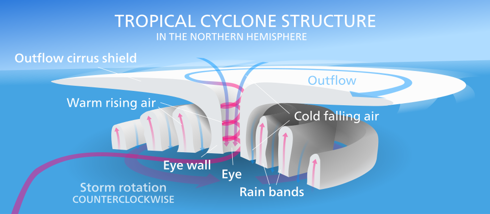

Tropical cyclones are among the most destructive weather systems on Earth. They are, with droughts, the deadliest meteorological hazard of the past half-century, they dominate the insured-loss record of the United States, the Caribbean, East Asia and Australia, and they are the principal source of coastal flooding in many low-lying deltas. In the North Atlantic and the eastern and central North Pacific they are called hurricanes, in the western North Pacific typhoons, and in the Indian Ocean and the Southern Hemisphere cyclones or tropical cyclones; physically they are the same phenomenon: a warm-core, non-frontal, synoptic-scale low-pressure system that draws its energy from the thermodynamic disequilibrium between a warm tropical ocean and the overlying atmosphere.
Hurricanes are also one of the clearest examples in geophysics of a natural heat engine. A mature storm extracts enthalpy from the sea surface at temperatures near 300 K, carries it upward in eyewall convection, and exports it to the upper troposphere and lower stratosphere at temperatures near 200 K. The mechanical work produced by this cycle is spent against surface friction, and the balance between energy input and dissipation sets an upper bound on intensity — the potential intensity — that can be computed from routine ocean and atmospheric soundings. That theoretical structure, developed largely from the 1980s onward, connects closely with operational practice: the categories issued by forecast centres, the surge and rainfall models used for evacuation, and the projections of how storms respond to a warming climate.
This course treats tropical cyclones at a graduate and professional level. It starts with climatology and genesis, develops the thermodynamic and dynamical theory of the mature vortex, and then turns to the hazards that kill people and destroy property — wind, storm surge and freshwater flooding — and to the observing systems, numerical models and forecast products used to anticipate them. The final lessons address climate change and attribution, and the engineering, planning and social science of risk reduction. A set of case studies from 1900 to 2022 illustrates how each component of the hazard has caused disasters, and what was learned from each.
In this course, you will:
- 1.Explain the environmental conditions required for tropical cyclogenesis and interpret genesis indices
- 2.Derive the Carnot-cycle view of a hurricane and compute potential intensity from sea-surface and outflow temperatures
- 3.Describe the three-dimensional structure of the vortex and apply gradient, cyclostrophic and angular-momentum arguments
- 4.Use intensity scales, pressure–wind relationships, satellite and reconnaissance methods, and understand their uncertainties
- 5.Quantify storm surge from wind setup and the inverse-barometer effect, and relate it to bathymetry and coastal geometry
- 6.Estimate storm rainfall totals from rain rate and translation speed, and explain inland flooding risk
- 7.Interpret track and intensity forecasts, ensembles, the cone of uncertainty and rapid-intensification guidance
- 8.Evaluate the evidence for climate-change effects on tropical cyclones and the methods of event attribution
- 9.Assess wind engineering, evacuation planning, warning systems and financial risk-transfer as risk-reduction tools
Figures


Contents
Climatology and Tropical Cyclogenesis Lesson 2
The Hurricane as a Heat Engine and Potential Intensity Lesson 3
Structure and Dynamics of the Mature Vortex Lesson 4
Measuring and Classifying Intensity Lesson 5
The Wind Hazard and Structural Engineering Lesson 6
Storm Surge and Coastal Waves Lesson 7
Rainfall and Inland Flooding Lesson 8
Track and Intensity Forecasting Lesson 9
Climate Change, Trends and Attribution Lesson 10
Risk Reduction, Warnings and Evacuation Case Studies
9 major events analysed References
34 sources for further reading
Image sources
- Figure 1 · Global tropical cyclone tracks-edit2. By Nilfanion (background image: NASA). Public domain. From Wikimedia Commons: https://commons.wikimedia.org/wiki/File:Global_tropical_cyclone_tracks-edit2.jpg
- Figure 2 · Hurricane-en. By Kelvinsong. CC BY 3.0. From Wikimedia Commons: https://commons.wikimedia.org/wiki/File:Hurricane-en.svg